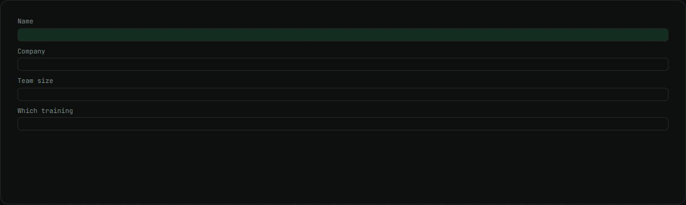
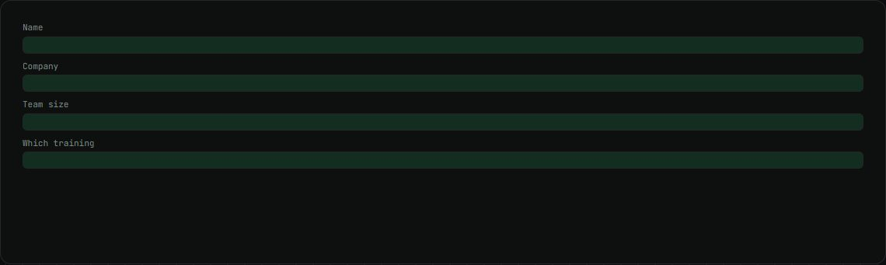

Soch Academy site
The site that sells Soch's private Claude training for teams, with an n8n lead flow.
my role Built most of it: 58 of 67 commits.
The problem
Soch needed a clear page for its team training offers and a reliable way to answer every lead quickly.
How it works
- Static HTML, deployed on Vercel on every push.
- The lead form posts to a 7-node n8n workflow.
- The person gets a reply email and the team gets an alert.
- Every lead is logged through Apps Script.
What changed
- 6pages
- 7nodes in the lead workflow
- 58of 67 commits
What I built
- The 6-page site.
- The n8n lead workflow.
Stack
- HTML
- CSS
- Vercel
- n8n
- Gmail
Stills

